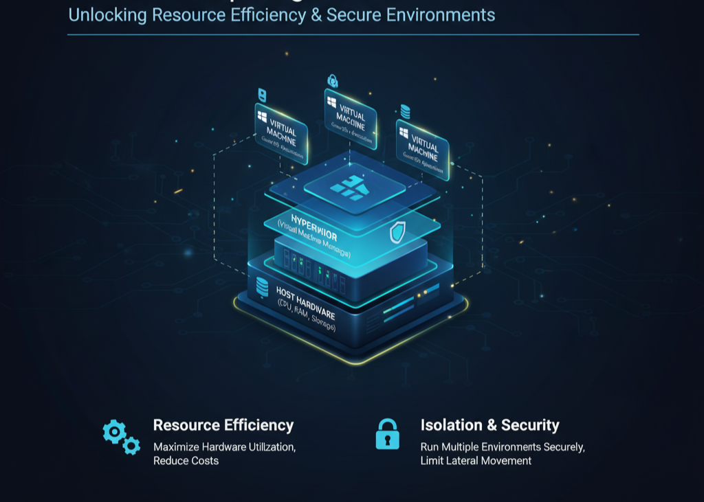

What is Virtualization?
Virtualization is the technology that allows one physical machine to run multiple virtual environments...
Core Concept
At the heart of virtualization is the hypervisor - the software that manages and allocates resources like CPU, RAM, and storage between different virtual machines.
- Type 1 (Bare Metal Hypervisors): Installed directly on hardware. Examples include VMware ESXi, Microsoft Hyper-V, and XenServer.
- Type 2 (Hosted Hypervisors): Run on top of an existing operating system, like VirtualBox or VMware Workstation.
Real-world example: Cloud providers like AWS and Google Cloud use Type 1 hypervisors to host thousands of isolated virtual servers on powerful machines, providing scalable on-demand computing.
Benefits of Virtualization
- Efficiency: Maximizes hardware usage...
- Isolation: Each VM runs independently...
- Scalability: Makes deploying new servers faster...
- Cost Savings: Reduces physical hardware needs...
- Disaster Recovery: VMs can be easily backed up and restored.
Example: A university IT lab may run dozens of student desktops using virtualization, allowing easy resets and updates without touching physical hardware.
Security Challenges in Virtualization
While virtualization improves flexibility, it also introduces new attack surfaces. A compromised hypervisor or misconfigured virtual machine can expose multiple systems at once.
Common Virtualization Risks
- VM Escape: A malicious program breaks out of a virtual machine and interacts with the host system or other VMs.
- Misconfiguration: Weak isolation or shared network settings can expose sensitive data.
- Snapshot Vulnerabilities: Saved VM states may include passwords or sensitive memory data.
- Hyperjacking: An attacker installs a rogue hypervisor beneath the existing OS, taking control of the entire machine.
- Insecure APIs: Cloud environments often expose APIs for automation that, if misused, can lead to unauthorized access.
Example: In 2021, a vulnerability in VMware's ESXi hypervisor allowed attackers to run malicious code on the host, leading to ransomware infections across virtualized infrastructures.
Virtualization Security Best Practices
- Regular Patching: Keep hypervisors, guest OSes, and management tools updated to fix known vulnerabilities.
- Network Segmentation: Isolate VMs by function and sensitivity to prevent lateral movement.
- Use Secure Hypervisors: Deploy trusted and well-supported hypervisors with strong authentication and logging.
- Least Privilege Access: Limit administrative access to virtual management consoles.
- Encryption: Encrypt VM disks, snapshots, and network traffic between virtual machines.
- Monitor and Audit: Track activity and detect unusual behavior across virtual environments.
Example: A cloud provider like Azure uses hardware-based isolation (via TPM and Secure Boot) to protect each VM tenant, ensuring no one can access another customer's environment even on the same host.
Beyond Virtualization: Containers and Cloud
Modern computing continues to evolve beyond traditional virtualization. Containers, such as those managed by Docker or Kubernetes, take the concept further by sharing the same OS kernel while isolating applications.
This creates faster, lightweight environments compared to full virtual machines. However, containers also depend on strict configuration and monitoring to maintain security boundaries.
Example: In DevOps, teams use Docker containers to build, test, and deploy applications consistently across different systems. Kubernetes orchestrates these containers, ensuring uptime and scalability.
Understanding virtualization is essential for managing secure cloud and hybrid environments today. It serves as the foundation for most modern IT infrastructures, from enterprise data centers to your favorite streaming platforms.